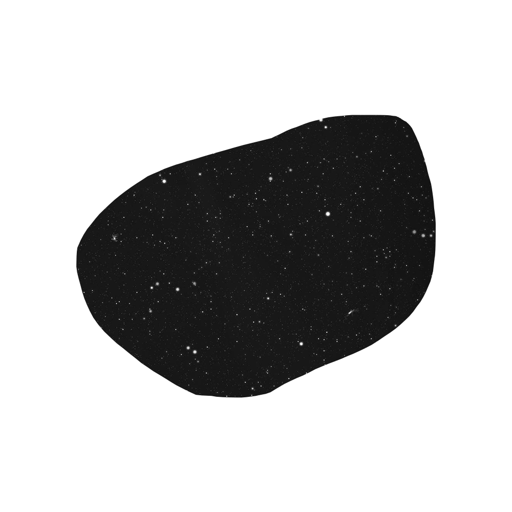
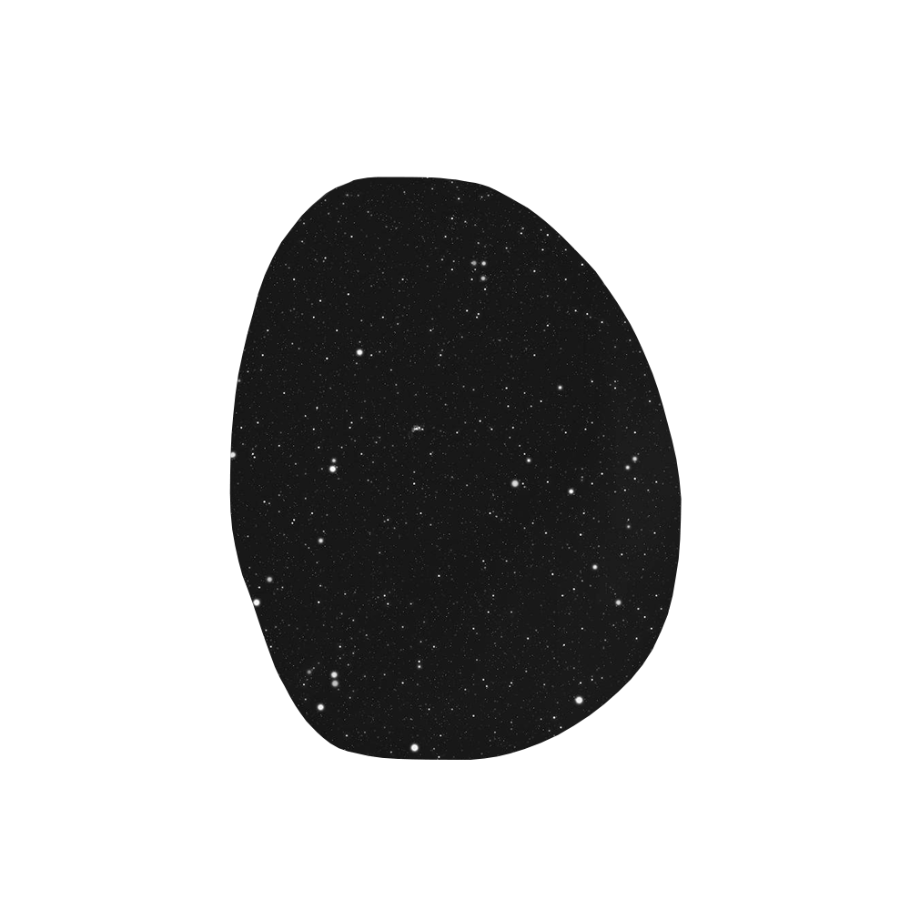

SPACETONE
Mari berangkat menuju perjalanan luar angkasa menembus bintang. Pintu menuju keajaiban alam semesta




TATA SURYA
Bintang
Matahari
Matahari, surya, mentari, atau aftab adalah bintang di pusat tata surya.
Matahari
Matahari, surya, mentari, atau aftab adalah bintang di pusat tata surya. Bentuknya nyaris bulat dan terdiri dari plasma panas bercampur medan magnet. Diameternya sekitar 1.392.684 km, kira-kira 109 kali diameter Bumi, dan massanya (sekitar 2×1030 kilogram, 330.000 kali massa Bumi) mewakili kurang lebih 99,86 % massa total tata surya. Matahari merupakan benda langit terbesar di galaksi Bima Sakti yang besarnya bahkan 10 kali planet terbesar tata surya, Jupiter.
Planet
Merkurius
Merkurius atau Utarid merupakan planet terkecil di Tata Surya sekaligus yang terdekat dari Matahari.
Merkurius
Merkurius atau Utarid merupakan planet terkecil di Tata Surya sekaligus yang terdekat dari Matahari. Periode revolusi planet ini merupakan yang terpendek dari semua planet di Tata Surya, yakni 87,79 hari. Seperti halnya Venus, Merkurius merupakan planet inferior yang letak orbitnya berada di sebelah dalam orbit Bumi, dan ketika diamati dari Bumi, jarak sudutnya dari Matahari tidak pernah melebihi 28°. Karena jarak yang dekat dengan Matahari, planet ini hanya dapat dilihat di dekat ufuk barat setelah matahari terbenam atau ufuk timur sebelum matahari terbit, atau biasanya ketika aram. Merkurius akan tampak seperti bintang yang terang jika diamati pada waktu tersebut, tetapi sering kali jauh lebih sulit untuk diamati daripada Venus.
Planet
Venus
Venus, Kejora (Bahasa Melayu) , Makbram (Bahasa Biak) atau Zohrah adalah planet terdekat kedua dari Matahari setelah Merkurius.
Venus
Venus, Kejora (Bahasa Melayu) , Makbram (Bahasa Biak) atau Zohrah adalah planet terdekat kedua dari Matahari setelah Merkurius. Planet ini mengorbit Matahari selama 224,7 hari Bumi. Venus tidak memiliki satelit alami dan dinamai dari dewi cinta dan kecantikan dalam mitologi Romawi. Setelah Bulan, planet ini merupakan objek alami tercerah di langit malam, dengan magnitudo tampak sebesar −4,6 yang cukup cerah untuk menghasilkan bayangan. Venus merupakan planet inferior dengan sudut elongasi yang mencapai 47,8°. Kecerahan maksimal planet ini dapat dilihat segera sebelum matahari terbit atau setelah matahari terbenam, sehingga disebut Bintang Fajar atau Bintang Senja.
Planet
Bumi
Bumi adalah planet terdekat ketiga dari Matahari yang merupakan planet terpadat dan terbesar kelima dari delapan planet dalam Tata Surya.
Bumi
Bumi adalah planet terdekat ketiga dari Matahari yang merupakan planet terpadat dan terbesar kelima dari delapan planet dalam Tata Surya. Bumi juga merupakan planet terbesar dari empat planet kebumian di Tata Surya. Bumi terkadang disebut dengan dunia atau "Planet Biru". Bumi terbentuk sekitar 4,54 miliar tahun yang lalu, dan kehidupan sudah muncul di permukaannya paling tidak sekitar 3,5 miliar tahun yang lalu. Biosfer Bumi kemudian secara perlahan mengubah atmosfer dan kondisi fisik dasar lainnya, yang memungkinkan terjadinya perkembangbiakan organisme serta pembentukan lapisan ozon, yang bersama medan magnet Bumi menghalangi radiasi surya berbahaya dan mengizinkan makhluk hidup mikroskopis untuk berkembang biak dengan aman di daratan.
Planet
Mars
Mars, Marikh (dari bahasa Arab مریخ), Jakabelek (dari bahasa Jawa ꦗꦏꦧꦼꦭꦺꦏ꧀), Sulobawie (bahasa Bugis), Hobim (bahasa Batak) atau Sangia (Bahasa Tolaki) adalah planet terdekat keempat dari Matahari. Namanya diambil dari dewa perang Romawi, Mars.
Mars
Mars, Marikh (dari bahasa Arab مریخ), Jakabelek (dari bahasa Jawa ꦗꦏꦧꦼꦭꦺꦏ꧀), Sulobawie (bahasa Bugis), Hobim (bahasa Batak) atau Sangia (Bahasa Tolaki) adalah planet terdekat keempat dari Matahari. Namanya diambil dari dewa perang Romawi, Mars. Planet ini sering dijuluki sebagai "planet merah" karena tampak dari jauh berwarna kemerah-kemerahan. Ini disebabkan oleh keberadaan besi(III) oksida di permukaan planet Mars. Mars adalah planet bebatuan dengan atmosfer yang tipis. Di permukaan Mars terdapat kawah, gunung berapi, lembah, gurun, dan tudung es. Periode rotasi dan siklus musim Mars mirip dengan Bumi. Di Mars berdiri Olympus Mons, gunung tertinggi di Tata Surya, dan Valles Marineris, lembah terbesar di Tata Surya. Selain itu, di belahan utara terdapat cekungan Borealis yang meliputi 40% permukaan Mars.
Planet
Jupiter
Jupiter, Musytari, Kumbendi (bahasa biak), Gumerah (Jawa : ꦒꦸꦩꦺꦫꦃ) atau Tunggalbahangi (Proto-Melayu) adalah planet kelima terdekat dari Matahari setelah Merkurius, Venus, Bumi, dan Mars.
Jupiter
Jupiter, Musytari, Kumbendi (bahasa biak), Gumerah (Jawa : ꦒꦸꦩꦺꦫꦃ) atau Tunggalbahangi (Proto-Melayu) adalah planet kelima terdekat dari Matahari setelah Merkurius, Venus, Bumi, dan Mars. Planet ini juga merupakan planet terbesar di Tata Surya. Jupiter merupakan raksasa gas dengan massa seperseribu massa Matahari dan dua setengah kali jumlah massa semua planet lain di Tata Surya. Planet ini dan raksasa gas lain di Tata Surya (yaitu Saturnus, Uranus, dan Neptunus) kadang-kadang disebut planet Jovian atau planet luar. Jupiter telah dikenal oleh para astronom sejak zaman kuno, dan dikaitkan dengan mitologi dan kepercayaan religius banyak peradaban. Bangsa Romawi menamai planet ini dari dewa Jupiter dalam mitologi Romawi.
Planet
Saturnus
Saturnus (serapan dari bahasa Belanda: saturnus), Zohal (serapan dari bahasa Arab: زحل), Tumpak (bahasa Jawa dan Sunda ꦠꦸꦩ꧀ꦥꦏ꧀ ), Belahnaik (Bahasa Batak) atau Anakdatuk (Proto-Melayu) adalah planet keenam dari Matahari dan merupakan planet terbesar kedua di Tata Surya setelah Jupiter.
Saturnus
Saturnus (serapan dari bahasa Belanda: saturnus), Zohal (serapan dari bahasa Arab: زحل), Tumpak (bahasa Jawa dan Sunda ꦠꦸꦩ꧀ꦥꦏ꧀ ), Belahnaik (Bahasa Batak) atau Anakdatuk (Proto-Melayu) adalah planet keenam dari Matahari dan merupakan planet terbesar kedua di Tata Surya setelah Jupiter. Saturnus juga merupakan sebuah raksasa gas yang memiliki perak rata-rata sekitar 9 kali radius rata-rata Bumi. Massa jenis rata-rata Saturnus hanya 1/8 massa jenis rata-rata Bumi, tetapi dengan volume yang lebih besar dari Bumi, massa Saturnus tercatat 95 kali massa Bumi. Saturnus dinamai menurut dewa kesejahteraan dan agribudaya dalam mitologi Yunani; simbol astronominya (♄) melambangkan sabit yang digunakan oleh dewa tersebut.
Planet
Uranus
Uranus (berasal dari nama Latin Ūranus untuk nama dewa Yunani Οὐρανός) adalah planet ketujuh dari Matahari.
Uranus
Uranus (berasal dari nama Latin Ūranus untuk nama dewa Yunani Οὐρανός) adalah planet ketujuh dari Matahari. Uranus merupakan planet yang memiliki jari-jari terbesar ketiga sekaligus massa terbesar keempat di Tata Surya. Uranus juga merupakan satu-satunya planet yang namanya berasal dari tokoh dalam mitologi Yunani, dari versi Latinisasi nama dewa langit Yunani Ouranos. Komposisi Uranus serupa dengan Neptunus, dan keduanya mempunyai komposisi kimiawi yang berbeda dari raksasa gas yang lebih besar, Jupiter dan Saturnus. Karenanya, para astronom sering menempatkan Uranus dan Neptunus dalam kategori "raksasa es" untuk membedakan keduanya dari raksasa gas. Atmosfer Uranus serupa dengan Jupiter dan Saturnus karena kandungan utamanya adalah hidrogen dan helium, tetapi mengandung lebih banyak unsur "es" seperti air, amonia dan metana, bersama dengan sisa hidrokarbon. Atmosfer Uranus merupakan atmosfer planet terdingin di Tata Surya, dengan suhu terendah mencapai 49 K (−224 °C; −371 °F).
Planet
Neptunus
Neptunus merupakan planet terjauh (kedelapan) dari Matahari. Neptunus merupakan planet terbesar keempat berdasarkan diameter (49.530 km) dan terbesar ketiga berdasarkan massa.
Neptunus
Neptunus merupakan planet terjauh (kedelapan) dari Matahari. Neptunus merupakan planet terbesar keempat berdasarkan diameter (49.530 km) dan terbesar ketiga berdasarkan massa. Massa Neptunus tercatat 17 kali lebih besar daripada Bumi, dan sedikit lebih kecil daripada Uranus. Neptunus mengorbit Matahari pada jarak 30,1 satuan astronomi (sa) atau sekitar 4.450 juta km. Periode rotasi planet ini adalah 16,1 jam, sedangkan periode revolusinya adalah 164,8 tahun. Planet ini dinamai dari dewa lautan Romawi. Simbol astronomisnya adalah ♆, yang merupakan trisula dewa Neptunus. Neptunus ditemukan pada tanggal 23 September 1846. Planet ini merupakan planet pertama yang ditemukan melalui prediksi matematika.